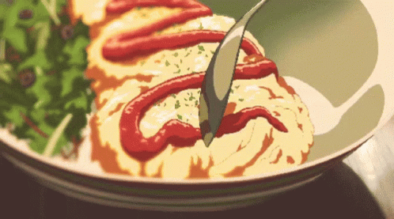

This dish the omelette will most definitely make you feel egg-cellent
after just one bite! There are many different ways to make and you can
basically add whatever you want into it, which is my favorite thing about omurice.
Whatever I have in my fridge, is what I'll add into the omurice!
For the one I shall be teaching you to make today will be very savory
and require few ingredients. Now let's get started!

Ingredients
3 slices of sandwich ham (chopped)
2 large eggs or 3 smaller eggs
2 cloves garlic (minced)
1 green onion
1 bowl of leftover rice
1/4 onion (chopped)
some salt, pepper, sugar
ketchup
Steps
Prep work
Crack one egg at a time into small bowl to make sure your
eggs do not go bad (bad eggs tend to be very watery and may have a foul smell).
If the egg looks good pour it into a bigger bowl and
repeat for all eggs.
When you are done cracking the eggs, add a tiny pinch of
salt, sugar, and pepper, then beat till the yolk and whites
have mixed thoroughly. Then set aside.
Take the ham out of packaging and chop them into bite
size pieces, place into a bowl and set aside. Later, do the same for
the green onion as well as the onion. Also do not forget to mince your garlic.
Now that all the prep work is done, we can start cooking!
Cooking
Add oil or butter to a pan and heat it up.
When the pan is warmed up, throw in the chopped green onions, onions and ham.
cook until the onions become aromatic then add the garlic. The reason why you
want to add the garlic last is because it burns easily, leaving a really bitter taste.
Then when the onions become a little transparent, add the rice and cook it all together.
Sprinkle some salt and pepper as you stir fry the ingredients.
Cook on medium high heat for 6 minutes. When that is done
pour the rice into a bowl and pack it tightly. When the fried rice is nicely
packed in, gently pour it onto a plate and let it cool.
Now we cook the egg! Once again add oil or butter to a pan
and warm it up. When the pan is ready pour in your egg.
As you're cooking the egg spread the egg mixture evenly
throughout the pan to make it a nice thin layer.
Cook the egg until it becomes slightly golden brown.
When the egg is finished, lay the "egg blanket" over your
nicely shaped rice and try to tuck it into the rice.
After it is nicely placed, take a bottle of ketchup and
squirt some on the top, like the image above, and enjoy!